Flex Items
Confira aqui o exercício Flex Items
Os flex items são os elementos filhos de um flex container. Quando você aplica display: flex; a um elemento pai, ele se torna um flex container e seus filhos diretos se tornam flex items.
Confira o exemplo a seguir:
Como visto nesse exemplo, aplicamos a propriedade order nos filhos, os flex items.
order
A propriedade order no CSS é usada para alterar a ordem de apresentação dos flex items dentro de um flex container. Por padrão, os itens flexíveis são exibidos na ordem em que aparecem no código-fonte. No entanto, com a propriedade order, você pode controlar essa ordem sem alterar o HTML.

Se você definir order: 1 para um item e order: 0 para outro, o segundo item aparecerá antes do primeiro na página, mesmo que venha depois no código-fonte. O valor padrão da propriedade é order: 0, e você pode usar números negativos ou positivos para posicionar os itens conforme necessário.
flex-grow
A propriedade flex-grow no CSS é usada para especificar quanto um item flexível (flex item) deve crescer em relação aos outros itens flexíveis dentro do mesmo contêiner flexível (flex container). O valor de flex-grow é um número sem unidade que serve como um fator de crescimento; ele determina a proporção do espaço disponível que o item deve ocupar.
Por exemplo, se você tem três itens flexíveis com flex-grow definido como 1, 2 e 1, respectivamente, o segundo item crescerá duas vezes mais que os outros dois em relação ao espaço extra disponível no contêiner.
Por padrão o valor é flex-grow:0
Mas o que acontece se colocarmos flex-grow:1 no primeiro conjunto de blocos?
No exemplo acima, o bloco 1 tem um valor de flex-grow maior que zero, permitindo que ele cresça e ocupe mais espaço dentro do contêiner flexível. Os outros dois blocos, com flex-grow definido como 0, não crescem e mantêm seu tamanho original. Assim, o bloco 1 expande-se para preencher o espaço restante disponível, enquanto os outros dois blocos não mudam de tamanho.
Porém se alterarmos o valor de flex-grow do .bloco-2 (que são os quadradinhos roxos), junto ao .bloco-1 (quadradinhos azuis), observe o que acontece:
Quando você ajusta a propriedade flex-grow dos grupos de blocos 1 e 2 para o mesmo valor positivo igual e superior a zero, eles crescem igualmente e ocupam espaços idênticos dentro do contêiner flexível. Em resumo, os blocos 1 e 2 compartilham o espaço extra de forma igual, enquanto o grupo de blocos 3 fica com o espaço que sobra, que é menor.
Alterando o valor do grupo de blocos .bloco-3, para um valor igual ao dos grupos 1 e 2, todos ocuparão o mesmo espaço disponivel.

Todos ocupam o mesmo espaço, inclusive na linha superior, mesmo que seja imperceptivel nela mesmo quando há diferença.
E se colocarmos um valor superior no primeiro bloco?
Observe que o .bloco-1 tem agora um valor de 2, superior ao valor 1 dos blocos 2 e 3..
Intuitivamente pensamos que por ter um valor que é o dobro, os quadrados do bloco 1 teriam o dobro de tamanho dos outros, certo? Humm, não é bem assim... ele não terá o dobro de tamanho dos outros mesmo que a proporção seja de 2 pra 1.
Nesse caso o que ocorre é que temos um valor fixo para nossos blocos que é de width: 150px (largura). Na verdade a proporção do nosso flex-grow não é a largura total do elemento, é apenas o que ele irá crescer a partir do tamanho padrão dele...
Vamos exemplificar para entendermos melhor:

O tamanho total do bloco 1 (sinalizado como o quadrado numero 10 na figura) é de 456px e o do bloco 2 (sinalizado como o quadrado numero 11) é de 303px
No bloco 1, se subtrairmos o valor total de 456px (que é o valor atual do flex-grow) pelo valor padrão que indicamos no CSS (que é de 150px) teremos o total de 306px
No bloco 2, se subtrairmos o valor total de 303px (que é o valor atual do flex-grow) pelo valor padrão que indicamos no CSS (que é de 150px) teremos o total de 153px
E sim, 306 é o dobro de 153, ou seja, o espaço que o quadradro cresceu fora o tamanho original do nosso elemento, é proporcional... o flex-grow:2 vai crescer duas vezes mais que o flex-grow:1
Resumidamente, ele não tem o dobro do tamanho, ele apenas cresceu 2x mais do que o que tem o valor 1. Isso valeria pra outros valores, como por exemplo 4 ser 4x maior em crescimento do que o valor 1 e etc.
flex-shrink
Se o flex-grow é a habilidade dos itens de crescer, o flex-shrink (shrik do ingles; "encolher") é uma propriedade CSS que define o fator de encolhimento de um item flexível.
Se o tamanho total dos itens flexíveis for maior que o contêiner flexível, os itens encolherão para se ajustar de acordo com flex-shrink. O valor padrão é 1, o que significa que o item flexível encolherá na mesma proporção que os outros itens flexíveis no contêiner.
Se você definir flex-shrink como 0, o item não encolherá, independentemente do tamanho dos outros itens, assim como se vc definir flex-shrink como 2 ou mais, ele encolhera 2x ou mais que os outros itens, assim como os exemplos que demos no flex-grow só que no caso do flex-shrink os valores proporcionais seriam para o encolhimento.
Atenção!
Para que a propriedade flex-shrink funcione corretamente, é necessário definir uma largura base para o container, que no nosso caso sera de 400px. Além disso, a propriedade flex-wrap deve estar configurada como nowrap para evitar que os itens sejam quebrados em linhas múltiplas.
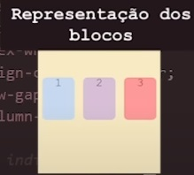
Esse será o nosso codigo daqui em diante.
Vamos aos exemplos:
Ao definir a largura do contêiner como 400px, todos os elementos dentro dele reduzirão proporcionalmente o tamanho. Isso ocorre porque o valor padrão do flex-shrink é 1, permitindo que os itens encolham se necessário, desde que o contêiner tenha uma largura máxima estabelecida. Diferente do flex-grow e do order, cujos valores padrão são 0, o flex-shrink já está ativo por padrão.
Se o nosso flex-grow é basicamente a propriedade inversa do flex-shrink, você pode entender que se colocarmos outros numeros como 2 ou mais, eles serão nada mais que unidades de proporção, então adicionando o flex-shrink:2 ao nosso bloco 3, ele vai encolher duas vezes mais que os outros dois blocos
Assim como no flex-grow, não é que o bloco 3 tem metade do tamanho dos blocos 1 e 2, mas sim o que ele encolheu é duas vezes mais do que os outros dois blocos.
Vamos ver na imagem esses valores:
Na figura 1 temos o valor dos 3 blocos após aplicarmos flex-shrink:2 no bloco 3 e flex-shrink:1 nos outros dois.
Na figura 2 temos o valor total do elemento bloco3 (150px) subtraido do valor atual apos o flex-shrink:2 (95px) que da o total de diminuição de 55px
Na figura 3 temos o total de diminuição do bloco2, que seria tamanho padrão (150px) ,menos o tamanho padrão após um flex-shrink:1 (122,5px) que da o total de 27,5px
27,5px é exatamente a metade de 55px.
Se colocarmos flex-shrink:0 no nosso bloco 1, veremos que ele nunca irá encolher.
Nosso bloco 2 irá encolher pelo valor padrão do flex-shrink:1 e nosso bloco 3, 2x mais pelo valor flex-shrink:2
Aqui, assim como no flex-grow, numeros negativos não se aplicam pois são unidades de proporção.
Para o nosso proximo conteudo, deixaremos nosso codigo base com os flex-shrink no 1 (o padrão) e retiraremos a largura base.
flex-basis
flex-basis é uma propriedade CSS que define o tamanho inicial de um item flexível antes de qualquer espaço livre ser distribuído de acordo com as propriedades flex-grow e flex-shrink. Ela determina o tamanho do conteúdo de um elemento ao longo do eixo principal de um contêiner flexível.
Basicamente, flex-basis define o tamanho dos nossos quadrados tanto em largura quanto em altura caso não tenhamos definido antes.
Mas como ela define o tamanho dos itens?
Ela ja tem algum padrão especifico?
E o que acontece com nossa configuração padrão de 150x150px?
Veremos tudo isso agora nos exemplos...
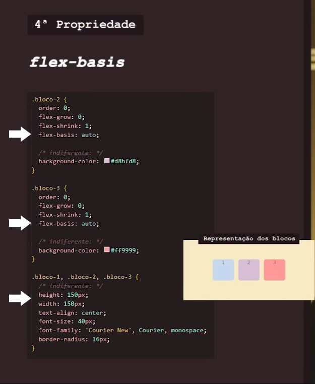
Por padrão, o valor de flex-basis é auto, a palavra "auto" é uma keyword (palavra-chave) e não um valor, e esse auto apenas diz para o código: "olhe para a height e a width que foi declarada no codigo e a utilize"
Mas e se não declararmos nenhum valor padrão de width e height?
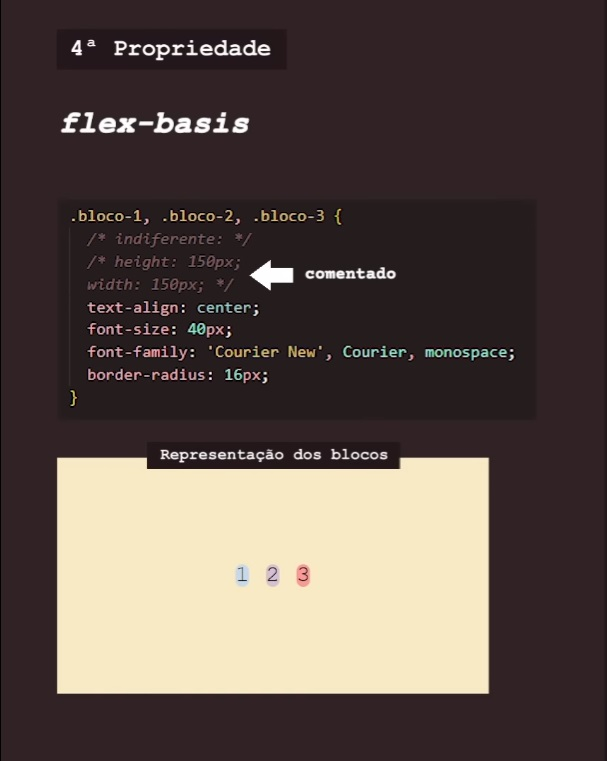
Se não declaramos nenhum valor, o valor padrao de altura e largura será o tamanho do seu conteúdo.
E se colocarmos flex-basis:0, o que aconteceria?
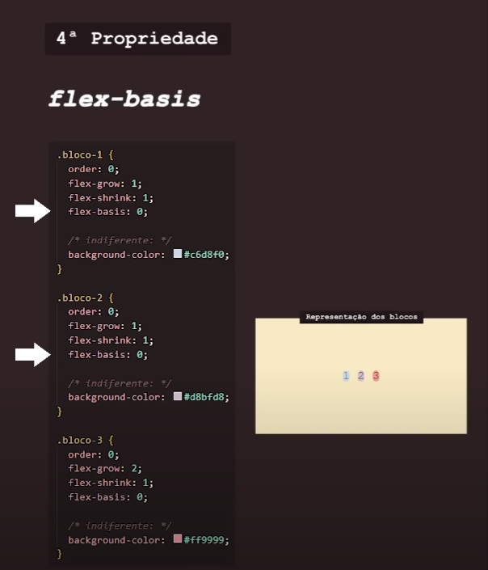
Vai continuar exatamente da mesma forma pois não estamos definindo nenhum valor para esses numeros e eles de fato vão continuar apenas do tamanho que tem o conteúdo.
Então quer dizer que colocar flex-basis:0 e flex-basis:auto é a mesma coisa? Ja adianto o spoiler... não é.
Para mostrarmos essa diferença, teremos que alterar algumas propriedades dos itens, pois eles são identicos...
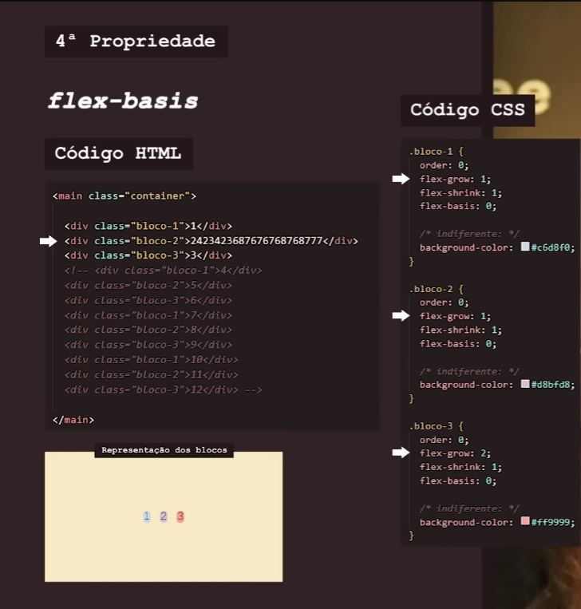
Como visto na imagem, alteramos o conteudo do bloco 2 para um conteúdo maior no nosso código HTML e no nosso código CSS, alteramos o valor de flex-grow para 1 nos blocos 1 e 2 e para 2 no nosso bloco 3
Vamos ver as diferenças entre as duas configurações:
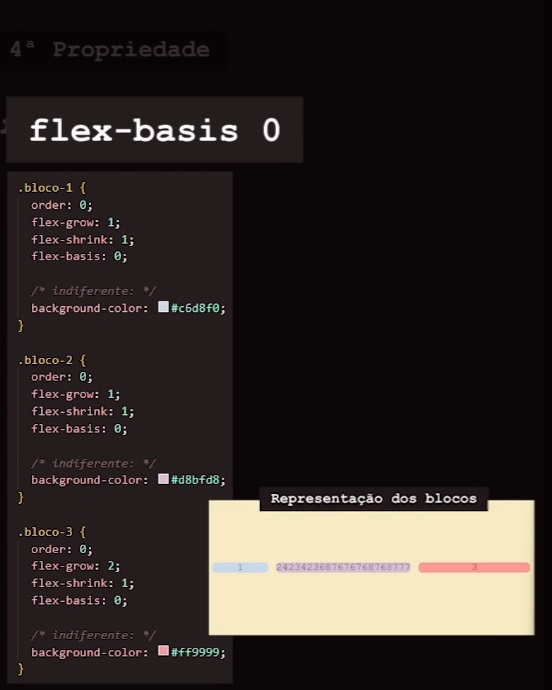
Definindo flex-basis:0, o nosso bloco 1 vai aumentar um pouquinho de tamanho, o bloco 3 vai aumtentar duas vezes mais que o 1 e o nosso bloco 2, não vai ter seu tamanho aumentado, ele vai ficar no limite do seu conteúdo.
Mas pq isso acontece?
Pq o flex-basis:0 não vai levar em conta o conteúdo que colocamos no flex-grow e sim o tamanho dos próprios elementos.
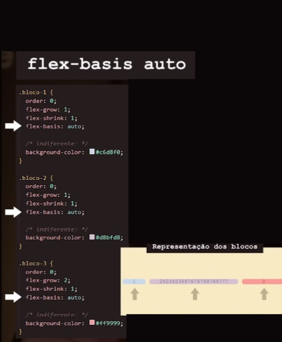
Porém se alteramos nessa mesma estrutura para flex-basis:auto, o nosso conteúdo do bloco 2 também vai ter um espaço dentro dele, assim como o bloco 1 tera esse mesmo espaço, pois ambos foram definidos como flex-grow:1. E o bloco 3 vai ter 2x mais espaço do que os dois primeiros blocos.
flex-basis:auto leva em conta o que definimos em flex-grow para o bloco 2.
Agora voltando nossas configurações para o normal no HTML e no CSS, a gente pode alterar o flex-basis para tamanhaos específicos com unidades de medidas:
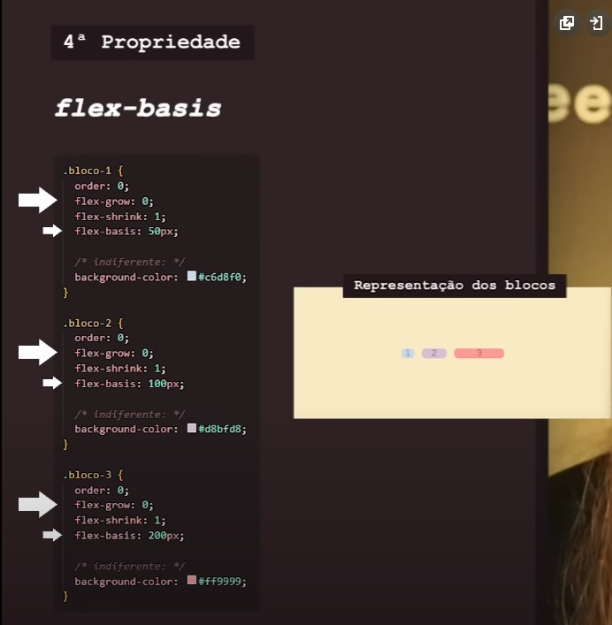
Assim com o a keyword "auto" existem diversas outras, porém não iremos nos aprofundar nelas.
Podemos conferir todas elas clicando aqui.
Manteremos nossos padrões de configuração para nossa próxima propriedade:
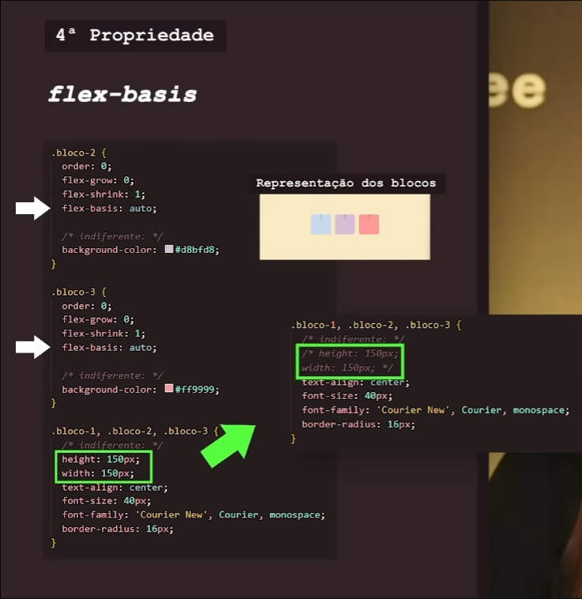
flex
Sim, flex também é uma propriedade flexbox, ela na verdade é um encurtador, uma junção de 3 propriedades que a gente viu anteriormente: flex-grow, flex-shrink e flex-basis, então ao invés de colocarmos por exemplo, flex-grow:0, flex-shrink:1 e flex-basis:auto, podemos resumir como no exemplo:
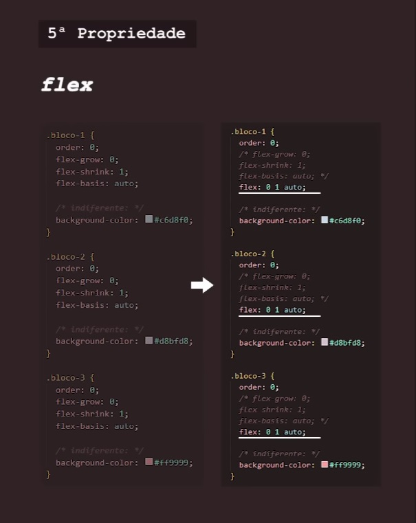
A ordem precisa ser mantida desta forma: valor de flex-grow, valor de flex-shrink e depois o valor de flex-basis, ficando assim: flex: 0 1 auto
Vamos deixar o nosso codigo como na tabela da direita, ja com o encurtador flex e vamos deixar as propriedades como comentario.
Uma dica interssante: Use (CTRL + ;) para comentar/retirar comentarios mais rapidamente.
align-self
Por último e não menos importante, a propriedade align-self permite que você alinhe individualmente um item dentro de um contêiner flexível, independentemente do alinhamento padrão definido pela propriedade align-items do contêiner e escolher valores como auto, flex-start, flex-end, center, baseline, ou stretch
Vejamos o nosso container com a propriedade align-items defininda:
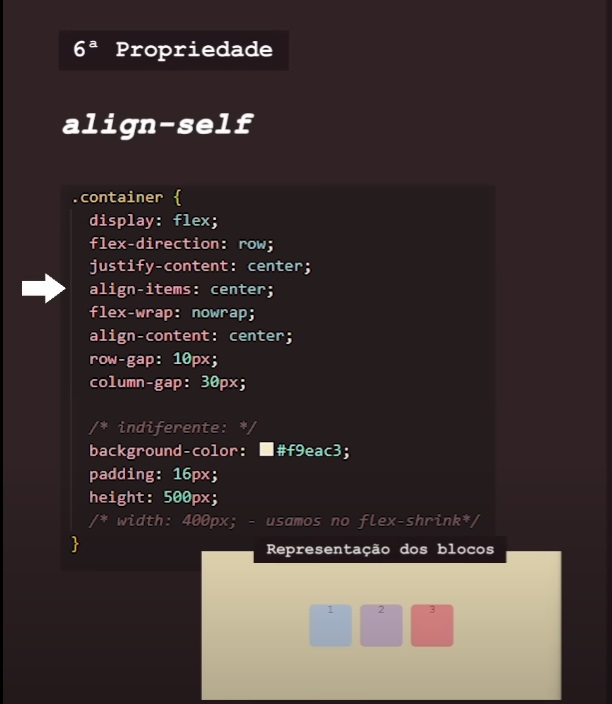
Agora faremos os ajustes nos flex-items:
Definimos como align-self:flex-start e vemos que o bloco 1 foi para a linha acima sozinho, ignorando a regra do container:
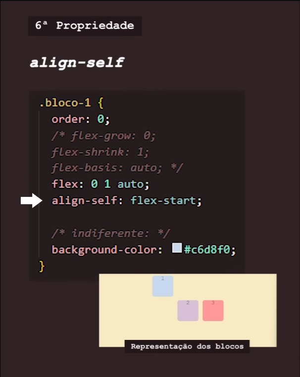
Aqui definimos como align-self:flex-end e o bloco 2 foi para a linha de baixo:
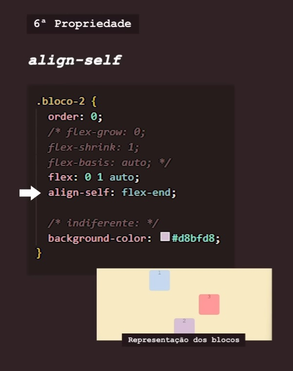
Pro bloco 3, definimos como align-self:center e nada mudou pois essa ja era a regra normal do align-items do container:
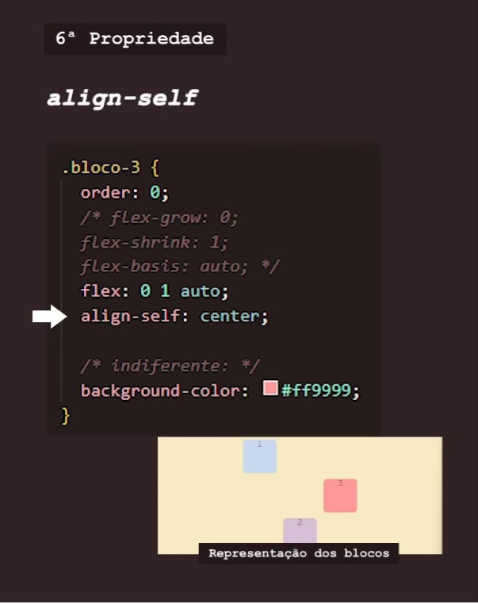